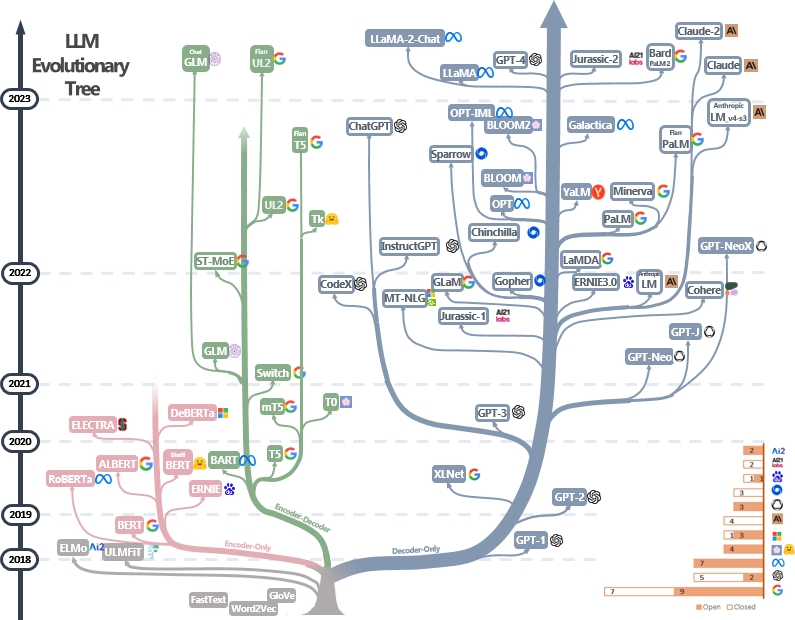
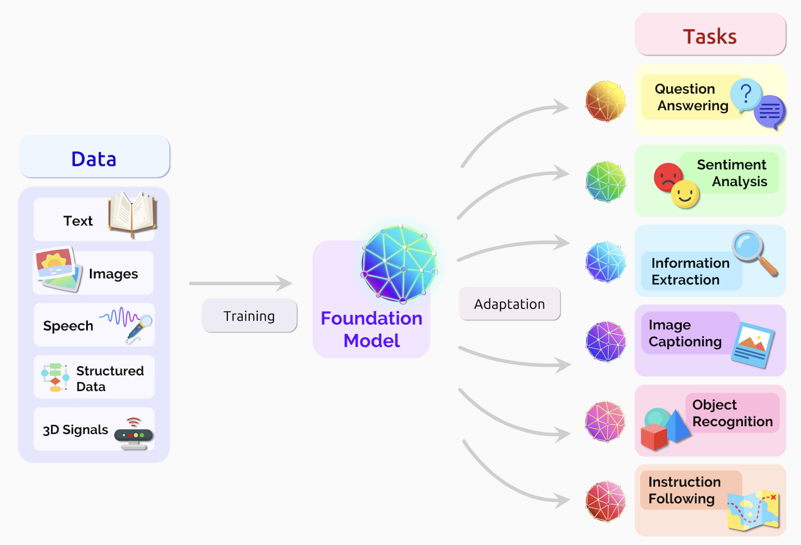
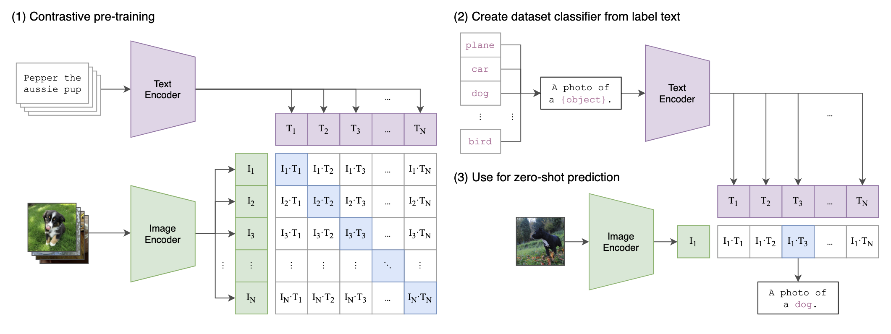
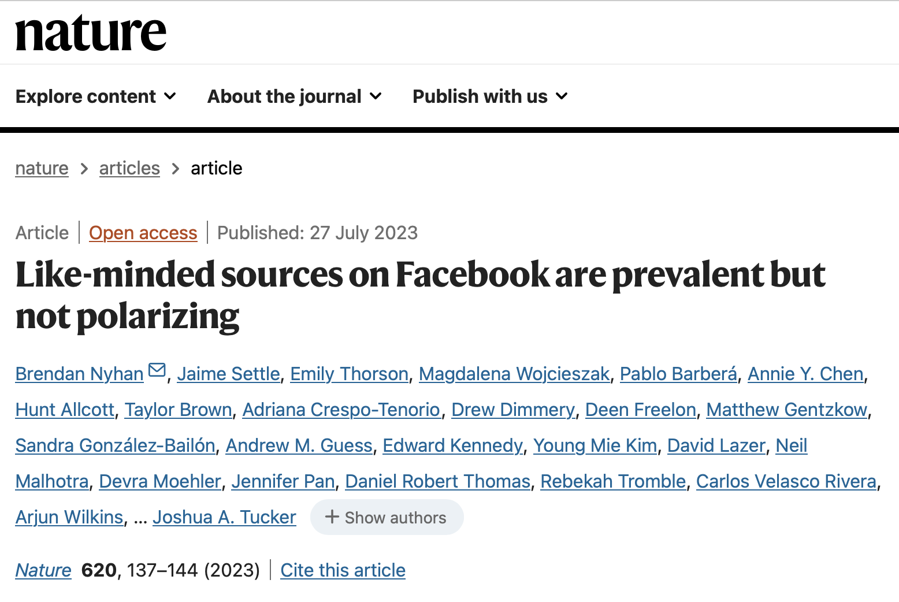

| Seminar dates and topics | ||
| Date | Topics | Required reading |
|---|---|---|
| 15 April 2026 |
|
Schwemmer, C., & Wieczorek, O. (2020). The Methodological Divide of Sociology: Evidence from Two Decades of Journal Publications. Sociology, 54(1), 3–21. Stuhler, O., Ton, C. D., & Ollion, E. (2025). From Codebooks to Promptbooks: Extracting Information from Text with Generative Large Language Models. Sociological Methods & Research, 54(3), 794–848. |
| 22 April 2026 |
|
Gilardi, F., Alizadeh, M., & Kubli, M. (2023). ChatGPT outperforms crowd workers for text-annotation tasks. PNAS, 120(30). Reiss, M. V. (2023). Testing the Reliability of ChatGPT for Text Annotation and Classification: A Cautionary Remark. arXiv Preprint. |
| 29 April 2026 |
|
Jungherr, A. (2018). Normalizing digital trace data. In N. J. Stroud & S. C. McGregor (Eds.), Digital Discussions: How Big Data Informs Political Communication (pp. 9–35). New York: Routledge. Sen, I., Flöck, F., Weller, K., Weiß, B., & Wagner, C. (2021). A Total Error Framework for Digital Traces of Human Behavior on Online Platforms. Public Opinion Quarterly, 85(S1), 399–422. |
| 6 May 2026 |
|
Chan, C.- Hong, Schatto-Eckrodt, T., & Gruber, J. (2024). What makes computational communication science (ir)reproducible? Computational Communication Research, 6(1). Nyhan, B., Settle, J., Thorson, E., Wojcieszak, M., Barberá, P., et al. (2023). Like-minded sources on Facebook are prevalent but not polarizing. Nature, 620(7972), 137–144. |
| 13 May 2026 |
|
Bauer, P. C., & Landesvatter, C. (2023). Writing a reproducible paper with RStudio and Quarto. OSF Preprint. |
| 20 May 2026 |
|
|
| 27 May 2026 |
|
|
Open Science and Reproducibility in CSS
Sebastian Stier
University of Mannheim & GESIS – Leibniz Institute for the Social Sciences
2024-05-06
Agenda for today
Large Language Models, continued
Applied text analysis in R
Open science and reproducibility in CSS
1. Large Language Models, continued
Recap: How do LLMs work?
- An LLM is a system that can predict the next word based on previous words. An LLM is a machine that has learned the patterns of language so well that it can generate new text that fits those patterns.
- Computers don’t understand words. The LLM turns a word into a list of numbers (a vector) that captures co-occurances.
- Attention: For every word, the model decides which other words in the sentence are important for understanding it.
- Language models consist of a neural network with many parameters (typically billions of weights).
- Trained on large quantities of unlabeled text using self-supervised learning.
Jurafsky, D., & Martin, J. H. (2026). Speech and Language Processing: An Introduction to Natural Language Processing, Computational Linguistics, and Speech Recognition, with Language Models (3rd ed.). https://web.stanford.edu/~jurafsky/slp3/
Recap: How do LLMs work?

OpenAI, Achiam, J., Adler, S., Agarwal, S., Ahmad, L., Akkaya, I., Aleman, F. L., Almeida, D., Altenschmidt, J., Altman, S., Anadkat, S., Avila, R., Babuschkin, I., Balaji, S., Balcom, V., Baltescu, P., Bao, H., Bavarian, M., Belgum, J., … Zoph, B. (2024). GPT-4 Technical Report.
Touvron, H., Lavril, T., Izacard, G., Martinet, X., Lachaux, M.-A., Lacroix, T., Rozière, B., Goyal, N., Hambro, E., Azhar, F., Rodriguez, A., Joulin, A., Grave, E., & Lample, G. (2023). LLaMA: Open and Efficient Foundation Language Models.
Visualizations of word embeddings
https://www.vectorvis.com/projector
This field is evolving quickly

How to interact with LLMs
- Zero shot learning: the user writes a natural language instruction (commonly called “prompt”) for the LLM that instructs it to perform a certain task
- Few shot learning: the user writes a prompt for the LLM that instructs it to perform a certain task + provides some examples
- Instruction tuning: the user trains a pre-trained model on task-related data. During fine tuning, model parameters are updated. A medium to large amount of labelled training data (i.e., examples that are annotated with the desired model output) is required.
Multimodality and multilingual coverage

Bommasani, R., Hudson, D. A., Adeli, E., Altman, R., Arora, S., Arx, S. von, Bernstein, M. S., Bohg, J., Bosselut, A., Brunskill, E., Brynjolfsson, E., Buch, S., Card, D., Castellon, R., Chatterji, N., Chen, A., Creel, K., Davis, J. Q., Demszky, D., … Liang, P. (2022). On the Opportunities and Risks of Foundation Models (arXiv:2108.07258). arXiv. https://doi.org/10.48550/arXiv.2108.07258
How do LLMs handle images?
- Scraping web images and their captions
- Extracting image features and comparing the patterns of occurence across images
- Using textual captions as image labels

Ramesh, A., Dhariwal, P., Nichol, A., Chu, C., & Chen, M. (2022). Hierarchical Text-Conditional Image Generation with CLIP Latents. OpenAI.
DALL·E 3

Betker, J., Goh, G., Jing, L., Brooks, T., Wang, J., Li, L., Ouyang, L., Zhuang, J., Lee, J., Guo, Y., Manassra, W., Dhariwal, P., Chu, C., & Jiao, Y. (2023). Improving image generation with better captions. OpenAI.
2. Applied text analysis in R
We will use quanteda
- Go to the updated file 4_text_analysis.R in https://sebastianstier.com/ma_css26/material.html
Homework
Using rollama for calling LLMs from R
Install the R package rollama: https://jbgruber.github.io/rollama
We’ll discuss any potential problems next week.
Play around with some of the LLMs included in rollama.
3. Open science and reproducibility in CSS
What is reproducibility?
Defining reproducibility
A minimum standard on a spectrum of activities (“reproducibility spectrum”) for assessing the value or accuracy of scientific claims based on the original methods, data, and code. […] In some fields, this meaning is, instead, associated with the term “replicability” or “repeatability”.
Reproducibility ensures that research is transparent, verifiable, and trustworthy.
Motivations for reproducibility
Increasing the robustness and trustworthiness of your own research
Facilitating collaboration (through the use of common tools and standards)
Being kind to future you:
- Editing and reusing your own code (e.g., for a paper revision or a follow-up study)
- Easily being able to pick up a project after a break or finding and understanding things again after a longer time
The Turing Way definition

Computational reproducibility
There also are distinctions between different types (or components) of reproducibility. One type/component that is especially relevant for our course is “computational reproducibility”:
Ability to recreate the same results as the original study (including tables, figures, and quantitative findings), using the same input data, computational methods, and conditions of analysis. The availability of code and data facilitates computational reproducibility, as does preparation of these materials (annotating data, delineating software versions used, sharing computational environments, etc). Ideally, computational reproducibility should be achievable by another second researcher (or the original researcher, at a future time), using only a set of files and written instructions.
The state of affairs

Chan, C., Schatto-Eckrodt, T., & Gruber, J. B. (2024). What makes computational communication science (ir)reproducible? Computational Communication Research.
Take 3-5 minutes with your neighbor(s) to quickly recap the key findings of Chan, Schatto-Eckrodt, and Gruber (2024).
Required reading: one of the “Facebook papers”

Nyhan, B., Settle, J., Thorson, E., Wojcieszak, M., Barberá, P., Chen, A. Y., Allcott, H., Brown, T., Crespo-Tenorio, A., Dimmery, D., Freelon, D., Gentzkow, M., González-Bailón, S., Guess, A. M., Kennedy, E., Kim, Y. M., Lazer, D., Malhotra, N., Moehler, D., … Tucker, J. A. (2023). Like-minded sources on Facebook are prevalent but not polarizing. Nature, 620(7972), 137–144.
Tools & workflows
Tools are programming languages, scripts and other pieces of software that we use to make our research reproducible.
Workflows are the ways in which we combine these tools to achieve our goal.
Choosing tools and establishing workflows are somewhat idiosyncratic processes that depend on…
the requirements of your project (methods, data types, …)
the availability of tools
your skills and knowledge
the preferences of collaborators
Research management practices
Being an open scientist means adopting a few straightforward research management practices, which lead to less error-prone, reproducible research workflows (Klein et al. 2018: 11)
- Using free and open source software (FOSS)
- Project-oriented workflow
- The tidyverse style guide
- Clear folder structures
- Naming things
The role of open science in your term papers
Requirements for term paper
- Should be based on content/methods covered in the seminar: collection and analysis of DBD, use of CSS methods in R
- (4,000-5,000 words)
- Submission deadline: 31 July 2026 (Prüfungsleistung/Examination)
- Fully reproducible code, including narrative comments where you explain what you do in each step
- You can share all materials, including data with me via https://cryptshare.gesis.org
Format of term paper
- Motivation and research question
- Concise theoretical overview: for what conceptual and theoretical reasons do I choose these data and methods?
- Research design
- Data and variables
- Method: no detailed mathematical description needed, but why does this method fit my research question and my data?
- Results
- Interpretation and conclusions
- Analysis code as an R script: needs to be fully reproducible
Presentations
- Short 5 minute elevator pitch of your ideas
- A structure with three slides could look like this
- Motivation, research question and theory
- Data source and data acquisition
- Current status / preliminary data collection / analysis
See you next week on May 13
References
Chan, Chung-hong, Tim Schatto-Eckrodt, and Johannes B. Gruber. 2024. “What Makes Computational Communication Science (Ir)reproducible?” Computational Communication Research.
Klein, Olivier, Tom E. Hardwicke, Frederik Aust, Johannes Breuer, Henrik Danielsson, Alicia Hofelich Mohr, Hans IJzerman, Gustav Nilsonne, Wolf Vanpaemel, and Michael C. Frank. 2018. “A Practical Guide for Transparency in Psychological Science.” Edited by Michéle Nuijten and Simine Vazire. Collabra: Psychology 4 (1). https://doi.org/10.1525/collabra.158.